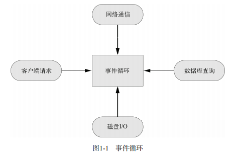

Node.js 最大的特点就是采用异步式 I/O 与事件驱动的架构设计。对于高并发的解决方 案，传统的架构是多线程模型，也就是为每个业务逻辑提供一个系统线程，通过系统线程切 换来弥补同步式 I/O 调用时的时间开销。Node.js 使用的是单线程模型，对于所有 I/O 都采用 异步式的请求方式，避免了频繁的上下文切换。Node.js 在执行的过程中会维护一个事件队 列，程序在执行时进入事件循环等待下一个事件到来，每个异步式 I/O 请求完成后会被推送 到事件队列，等待程序进程进行处理。
例如，对于简单而常见的数据库查询操作，按照传统方式实现的代码如下：
- res = db.query('SELECT * from some_table');
- res.output();
以上代码在执行到第一行的时候，线程会阻塞，等待数据库返回查询结果，然后再继续 处理。然而，由于数据库查询可能涉及磁盘读写和网络通信，其延时可能相当大（长达几个 到几百毫秒，相比CPU 的时钟差了好几个数量级），线程会在这里阻塞等待结果返回。对于 高并发的访问，一方面线程长期阻塞等待，另一方面为了应付新请求而不断增加线程，因此 会浪费大量系统资源，同时线程的增多也会占用大量的 CPU 时间来处理内存上下文切换， 而且还容易遭受低速连接攻击。
看看Node.js是如何解决这个问题的：
- db.query('SELECT * from some_table', function (res) {
- res.output();
- });
这段代码中 db.query 的第二个参数是一个函数，我们称为回调函数。进程在执行到 db.query 的时候，不会等待结果返回，而是直接继续执行后面的语句，直到进入事件循环。 当数据库查询结果返回时，会将事件发送到事件队列，等到线程进入事件循环以后，才会调 用之前的回调函数继续执行后面的逻辑。
Node.js 的异步机制是基于事件的，所有的磁盘 I/O 、网络通信、数据库查询都以非阻塞 的方式请求，返回的结果由事件循环来处理。图1-1 描述了这个机制。Node.js 进程在同一时 刻只会处理一个事件，完成后立即进入事件循环检查并处理后面的事件。这样做的好处是， CPU 和内存在同一时间集中处理一件事，同时尽可能让耗时的 I/O 操作并行执行。对于低速 连接攻击，Node.js 只是在事件队列中增加请求，等待操作系统的回应，因而不会有任何多 线程开销，很大程度上可以提高 Web 应用的健壮性，防止恶意攻击。
图1-1 事件循环
这种异步事件模式的弊端也是显而易见的，因为它不符合开发者的常规线性思路，往往 需要把一个完整的逻辑拆分为一个个事件，增加了开发和调试难度。针对这个问题，Node.js 第三方模块提出了很多解决方案，我们会在第6章中详细讨论。